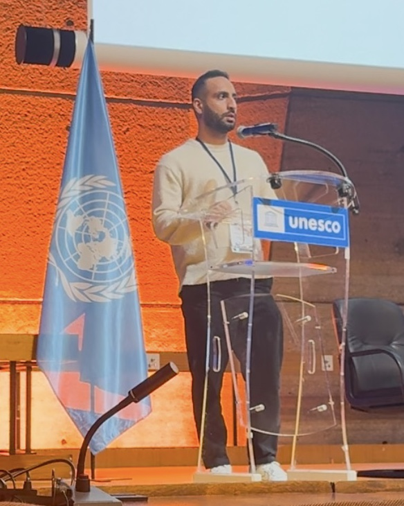

About

I finished my Ph.D. at the University of Siena in February 2026, supervised by Marco Gori, and stayed on at DIISM as a postdoctoral researcher with Marco Maggini. Before Siena I studied applied mathematics here and applied statistics at the University of Hormozgan, which is where the habit of checking a claim against data comes from.
Alongside the postdoc I am an AI engineer at Villanova.AI, where I built the instruction-tuning data behind the open Villanova models, and a generative AI engineer at YUKAI! in Siena. I also run Tildea, which writes a resume for a specific job from what you have really done and leaves out the rest.
I have spent stretches as a visiting researcher at the University of Massachusetts Amherst, at Inria in Nice and at the University of Gothenburg, and I have supervised ten master's theses at Siena.
If you want to collaborate on educational NLP, on a language that needs resources, or on evaluation that goes past a leaderboard, write to me.
Service
Reviewing, chairing and organising for the communities the work belongs to.
Loading.
Talks
Seminars, invited talks and recorded conference talks. Papers presented at conferences are also listed on the updates page.
Loading.
Path
Certificates and courses
Loading.